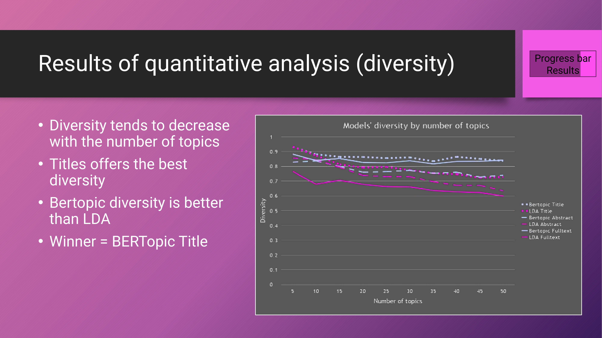
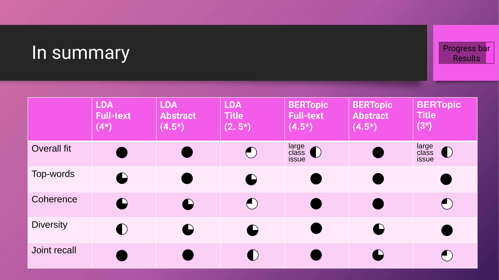
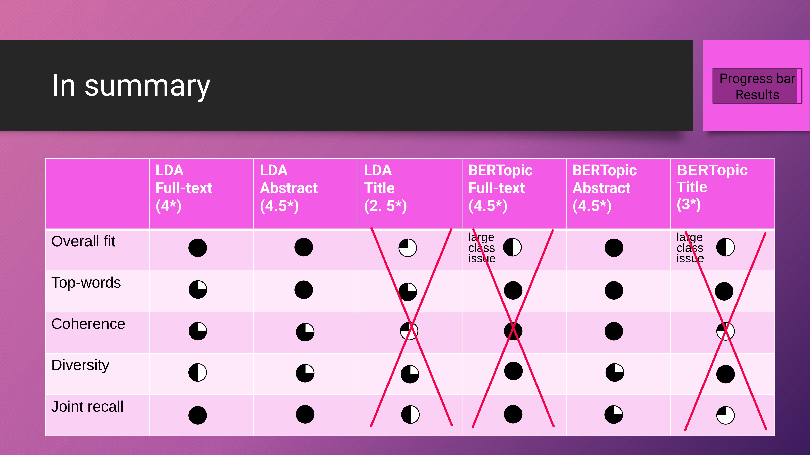

14 A Comparative Study of LDA and BERTopic Performance Across Text Levels
Overview
In a comparative study, Francis Lareau and Christophe Malaterre evaluated the performance of Latent Dirichlet Allocation (LDA) and BERTopic, two prominent topic modelling approaches, across various levels of textual granularity. Topic modelling, a computational method for extracting latent themes from a corpus, has become an essential analytical tool for navigating large volumes of scientific literature, particularly within the history, philosophy, and sociology of science (HPSS). The technique facilitates the identification of research trends and paradigm shifts, the discernment of thematic substructures, and the analysis of evolving scientific vocabularies.
Previous applications of topic modelling have drawn upon diverse textual components, including titles, abstracts, and full texts. This observation prompted Lareau and Malaterre to investigate a critical question: does applying topic modelling solely to titles or abstracts suffice, or is full-text analysis indispensable? The question carries significant weight, given the substantial resources required to obtain, preprocess, and analyse comprehensive full-text corpora.
To address this, the authors constituted a corpus of scientific articles, meticulously isolating their title, abstract, and full-text sections. They then applied both LDA and BERTopic to each of these textual components, generating six distinct topic models. Finally, the team subjected these models to rigorous qualitative and quantitative comparison to determine their relative merits.
14.1 Topic Modelling in HPSS

Topic modelling has established itself as an indispensable tool within the History, Philosophy, and Sociology of Science (HPSS). The method enables scholars to identify research trends and paradigm shifts (Griffiths and Steyvers, 2004) and to reveal the substructures and interrelations of themes (Blei and Lafferty, 2007). Furthermore, it supports the analysis of scientific vocabulary evolution (Chavalarias and Cointet, 2013) and aids in uncovering hidden biases within scientific discourse (Sugimoto et al., 2013).
Academics also employ topic modelling to study the sociology of scientific communities (Gerow et al., 2018), analyse the interdisciplinary nature of various fields (Hyeyoung et al., 2022), and enhance the historiography of both science (Mimno, 2012) and art (Browman, 2023). A crucial observation from this body of work is the varied application of topic modelling to different textual structures, including titles, abstracts, and full texts.
This variety directly informs the central research question posed by Lareau and Malaterre: is a comprehensive full-text analysis truly necessary, or can one achieve comparable results using only titles or abstracts? This inquiry is particularly urgent given the considerable investment of time and resources needed to manage full-text corpora. Their methodology therefore involved a systematic comparison of models derived from each textual level.
14.2 Comparing LDA and BERTopic

This study provides a rigorous comparison of two leading topic modelling approaches: Latent Dirichlet Allocation (LDA) and BERTopic. Both methodologies operate on shared fundamental postulates: that documents can be represented by numerical vectors, that topics become identifiable through linguistic regularities, and that machine learning can automate the detection of these patterns.
LDA, a classical statistical technique, employs a vector representation derived from word counts within documents. In this framework, topics manifest as latent variables adhering to Dirichlet’s law. A key advantage of LDA is its capacity to effectively process long texts, making it suitable for analysing titles, abstracts, or full texts.
Conversely, BERTopic represents a more contemporary, modular approach. It leverages vector representations from large language models, originally building upon BERT, from which it derives its name. Within BERTopic, topics correspond to clusters of documents that reflect their topological densities. Whilst traditionally limited in handling extensive texts, recent advancements have enabled BERTopic to process significantly longer documents—up to approximately 131,000 tokens. Consequently, Lareau and Malaterre specifically tested BERTopic with novel embedding techniques designed to manage such substantial text lengths.
14.3 Astrobiology Corpus and Qualitative Framework

For their analysis, the authors used an Astrobiology corpus previously explored by Malaterre and Lareau (2023). Following a thorough evaluation, they selected a full-text LDA model comprising 25 distinct topics as a reference. The team meticulously analysed each topic by examining its most representative words and documents, subsequently assigning a descriptive name based on its key terms.
They then calculated the mutual correlation between these topics, based on their co-occurrence within documents. A community detection algorithm subsequently identified four thematic clusters, designated A, B, C, and D, and distinguished by red, green, yellow, and blue colour variations. The findings are presented in a graph that illustrates the correlations amongst the 25 topics, complete with their labels and cluster affiliations. In this visualisation, line thickness signifies correlation strength, whilst circle size indicates a topic’s prevalence across the corpus.
This comprehensive framework facilitates a qualitative comparison of the six topic models. For instance:
Cluster A (red/pink) encompasses topics such as the effects of space on health (A-CELL-PLANT-ANIMAL), microbial survival (A-RADIATION-SPORE), and social studies of astrobiology (A-LIFE-CIVILIZATION).
Cluster B (green/teal) includes themes like prebiotic chemistry (B-ORGANIC-MOLECULE), properties of amino acids (B-AMINO-ACID), and the origin of chirality (B-CHIRALITY).
Cluster C (yellow/orange) features topics such as planetary atmospheres (C-ATMOSPHERE) and the dynamics of planetary systems (C-PLANET-STAR).
Cluster D (blue) covers areas like geological biosignatures (D-STRUCTURE-GEOLOGY) and the characterisation of Mars (D-MARS).
14.4 Quantitative Evaluation Metrics

Lareau and Malaterre compared the topic models using four distinct quantitative metrics.
The Adjusted Rand Index evaluates the similarity between two document clusterings whilst correcting for chance agreement.
Topic diversity quantifies the proportion of unique top words within a given topic model.
Joint recall assesses the extent to which the top words collectively represent the documents classified within each topic.
The coherence metric, specifically Coherence CV, determines whether the top words meaningfully co-occur by measuring the average cosine relative distance between them. This measure, derived from Syed and Sprout (2017), incorporates Normalised Pointwise Mutual Information (NPMI) and cosine similarity to provide a robust evaluation of topic quality.
14.5 Assessing Model Similarity

The Adjusted Rand Index provides a clear measure of similarity amongst the six topic models, where a value of zero signifies random clustering. Analysis of this metric reveals that the LDA model applied to titles is the most divergent, consistently yielding values below 0.20. For example, its correlation with the LDA full-text model is a mere 0.13.
In contrast, all other models demonstrate superior overall correspondence, with their Adjusted Rand Index values generally exceeding 0.20. The BERTopic models exhibit a particularly strong internal consistency, with inter-model values frequently surpassing 0.35; the similarity between BERTopic full-text and BERTopic abstract is 0.36, whilst that between BERTopic abstract and BERTopic title is 0.38.
Furthermore, the BERTopic Abstract model emerges as a central configuration, correlating effectively with all other models except for the outlier LDA title model, and consistently achieving values above 0.30.
14.6 LDA Performance Across Granularities

A more granular analysis of the LDA models offers detailed insights into their comparative performance. When comparing LDA Full-text with LDA Abstract, as depicted in Table A, the authors observed a generally good fit. This correspondence is evidenced by a high proportion of shared documents between topics, visually represented by a reddish diagonal in the organised data.
However, this comparison also revealed specific structural changes. Three full-text topics disappeared entirely in the abstract model, whilst another three fragmented into multiple, more specific topics. Conversely, three entirely new topics emerged in the abstract model, and three others resulted from the merger of several full-text topics.
In stark contrast, the comparison between LDA Full-text and LDA Title, presented in Table B, demonstrated a poor fit. This significant disparity indicates an extensive reorganisation of topics, characterised by the disappearance of numerous full-text topics and the emergence of many new, unrelated title-based topics.
14.7 BERTopic Performance Across Granularities

The authors’ assessment of the BERTopic models reveals distinct levels of fit across different textual granularities. The comparison between LDA Full-text and BERTopic Full-text (Table C) showed an average overall fit, highlighting significant reorganisation: eight LDA topics disappeared, and six split. Conversely, five new BERTopic topics emerged, and one resulted from a merger. This analysis also identified four small classes and one notably large class, presenting a potential issue with class balance.
In Table D, the comparison between LDA Full-text and BERTopic Abstract indicated a relatively good overall fit. Here, four LDA topics disappeared and six split, whilst two new BERTopic topics appeared and four resulted from mergers. Crucially, the classes remained well-balanced.
Finally, Table E, comparing LDA Full-text with BERTopic Title, showed an average fit. This configuration saw seven LDA topics disappear and one split, whilst seven new BERTopic topics emerged. Similar to the full-text model, this configuration also produced three small classes and one large class. Across all BERTopic models, the top-words assessment consistently indicated well-formed topics, with the A-Radiation spore topic demonstrating remarkable robustness.
14.8 LDA Top-Word Analysis

A detailed assessment of top words across the LDA Full-Text, LDA Abstract, and LDA Title models reveals distinct patterns of topic correspondence and evolution. Certain topics, such as A-Radiation-spore and A-Life-civilization, demonstrate robust consistency across all LDA models. They retain core top words like ‘radiation’, ‘spore’, and ‘space’ for the former, and ‘life’, ‘civilization’, and ‘universe’ for the latter.
Conversely, other topics exhibit splitting behaviour. The B-Chemistry topic, initially characterised by terms such as ‘reaction’, ‘product’, and ‘synthesis’ in the full-text model, fragments across the abstract and title models, yielding distinct sets of top words in each. The authors note that the fragmentation within the LDA title model is particularly challenging to interpret without further analysis.
Furthermore, the team observed instances of topic merger. The B-Amino-acid and B-Protein-gene-RNA topics, distinct in the full-text model, coalesce into new, more generalised topics within both the abstract and title models. This merger, encompassing terms like ‘protein’, ‘code’, and ‘genetic’, forms a logically coherent, broader thematic category.
14.9 BERTopic Top-Word Analysis

Further assessment of top words across the three BERTopic models consistently revealed well-formed topics. The A-Radiation spore topic, for instance, demonstrated remarkable robustness across all models, maintaining its core thematic focus.
Whilst the A-Life civilization topic also remained comparatively stable, it exhibited some splitting behaviour. This fragmentation led to the formation of narrower, more specific topics centred on extraterrestrial life, incorporating terms such as ‘fermi’, ‘drake’, and ‘seti’. Similarly, the splitting of the B-Chemistry topic also resulted in more granular themes, featuring terms like ‘peptide’, ‘amino’, and ‘montmorillonite’.
Conversely, the B-Amino-acid and B-Protein-gene-RNA topics merged into new, broader categories within the BERTopic models. These consolidated topics encompass terms such as ‘genetic’, ‘code’, and ‘protein’, creating more generalised thematic groupings.
14.10 Performance by Coherence

Lareau and Malaterre evaluated the performance of all six models across a range of 5 to 50 topics, focusing first on the Coherence CV metric, which assesses the meaningfulness of a topic’s top words. Their analysis revealed that titles consistently yielded the poorest coherence, with scores generally falling below 0.4.
Conversely, abstract-based models demonstrated superior coherence compared to full-text models, often achieving scores above 0.6. Overall, BERTopic models exhibited better coherence than LDA for both abstracts and titles, with BERTopic Abstract consistently outperforming LDA Abstract. This performance gap, however, tended to diminish as the number of topics increased.
Ultimately, BERTopic Abstract emerged as the clear winner in terms of coherence for its category. Whilst the full-text models, BERTopic Fulltext and LDA Fulltext, generally displayed the highest absolute coherence scores—typically exceeding 0.7—the performance of BERTopic Abstract was exceptional for a model based on summary text.
14.11 Performance by Diversity

The diversity metric, which quantifies the proportion of distinct top words representing the topics, also underwent rigorous evaluation. The authors observed a general trend where diversity tended to decrease as the number of topics increased.
Notably, models utilising titles consistently offered the best diversity. Furthermore, BERTopic models demonstrated superior diversity compared to LDA across all text types. Ultimately, BERTopic Title emerged as the winner in terms of diversity, closely followed by BERTopic Full-text. In contrast, the full-text models generally yielded the lowest diversity scores.
14.12 Performance by Joint Recall

Joint recall, a metric assessing how effectively top words represent the documents within each topic, provided further insights. The analysis revealed that models utilising titles consistently exhibited the poorest recall. BERTopic Title generally fell below 0.5, and LDA Title remained below 0.6.
Conversely, full-text models significantly outperformed their abstract and title counterparts. BERTopic Fulltext consistently achieved recall values above 0.9, whilst LDA Fulltext approached a perfect 1.0, particularly as the number of topics exceeded 20.
Overall, LDA demonstrated superior joint recall to BERTopic across all textual granularities. LDA Fulltext emerged as the clear winner, with BERTopic Fulltext also showing commendably high recall. The BERTopic Abstract model performed well, achieving values between 0.7 and 0.8.
14.13 Overall Performance and Recommendations

In summarising the overall model performance, Lareau and Malaterre emphasise that no single model represents an absolute optimum. Instead, the most suitable choice depends entirely on the specific research objectives.
For instance, if the primary goal is to discover main topics without requiring precise document classification, then BERTopic on full texts performs commendably, despite some class imbalance. Similarly, whilst BERTopic on titles proved suboptimal in overall metrics, it nonetheless generated robust topics that also appeared in other, better-performing models.
The authors strongly advise against using LDA on titles, given its consistently poor performance across nearly every assessment. They recommend conducting topic modelling on either abstracts or full texts, utilising both LDA and BERTopic. This dual approach allows for a cross-validation of findings, provided the application does not result in the misclassification of documents pertinent to specific topics. The LDA Abstract and BERTopic Abstract models consistently achieved a strong balance of high overall fit, top-word quality, coherence, diversity, and joint recall.
14.14 Key Findings and Future Directions

This research yielded several key findings regarding topic modelling performance across different text levels. Firstly, title-based models consistently demonstrated poor performance. The inherent lack of information in titles can lead to the false classification of documents, although the authors note that the BERTopic title model still produced some meaningful topics. This suggests a need to balance well-defined topics with comprehensive document coverage.
Secondly, full-text models presented their own challenges. LDA models, for instance, could produce loosely defined topics with overly broad coverage, whilst BERTopic models sometimes generated overly narrow topics, resulting in poor document coverage and class size imbalances. Thirdly, abstract-based models consistently performed well, exhibiting results that were consistent with the LDA full-text model.
A fourth finding was the notable robustness of certain topics across all models, which facilitates meta-analytic methods for identifying the most stable themes. This consistency also opens the possibility of using relative distance between models to pinpoint an optimal configuration. In this study, BERTopic Abstract emerged as the strongest candidate.
Finally, these findings prompt a crucial question about the future of topic modelling: is it time for new models? Lareau and Malaterre contend that it is, highlighting the potential to leverage structural information from full texts, abstracts, and titles simultaneously to extract even more meaningful sets of topics.